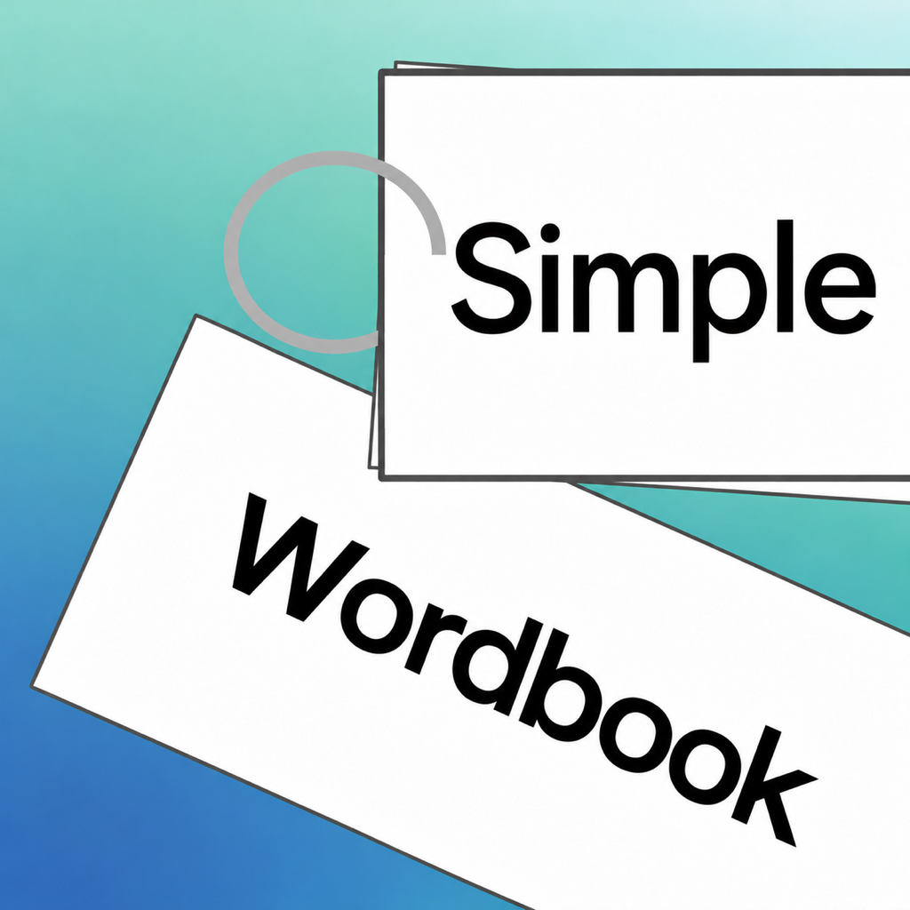
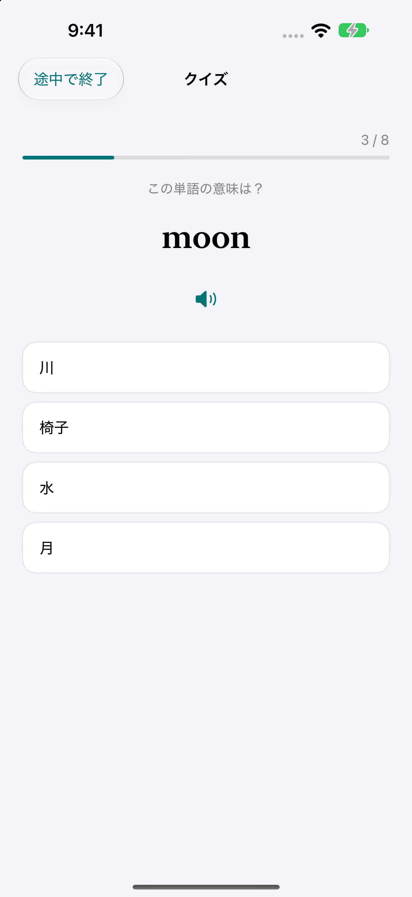
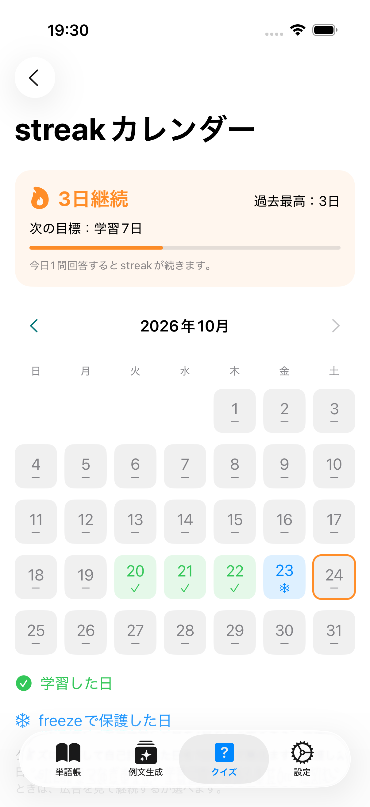
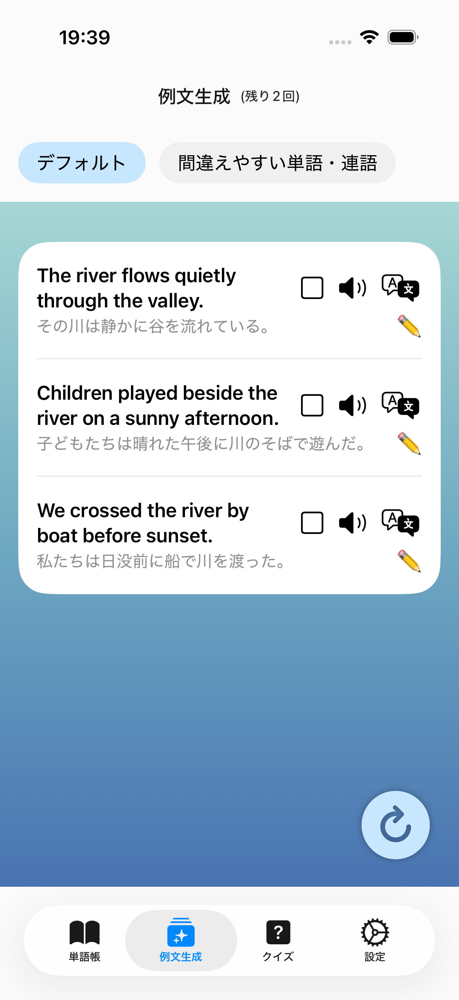

気になった言葉を残す
単語もフレーズも、自分で登録。読書用、仕事用、試験用など、リストを分けて整理できます。

シンプル自作英単語帳My Wordbook英単語を登録して復習できるアプリ
何度も調べてしまう英単語を、
自分の単語帳に残しておく。
意味や発音を確認して、
クイズでくり返し復習できます。
iPhone・iPad対応 / アカウント登録不要
次回アップデート 続けた日がわかる、学習カレンダー
クイズ画面（バージョン1.15）
調べて終わりにしないために
単語を増やすところから、思い出す練習まで。ひとつのアプリで。
単語もフレーズも、自分で登録。読書用、仕事用、試験用など、リストを分けて整理できます。
自動翻訳と読み上げで、意味と発音を確認。訳は編集できるので、覚えたい意味で残せます。
4択で答えたり、答えを見て覚え具合を確かめたり。登録した単語を使って、短いクイズで復習できます。
次回アップデート · 1.16で追加予定
クイズで学んだ日を、カレンダーに記録。
今日もできた。その積み重ねが見えるようになります。
広告を視聴できる場合に、画面に表示された期間の継続を保護できます。保護した日は学習日数に加算されません。


例文でも確かめる
登録した単語を使って、AIが例文を作成。
訳と音声も確かめながら、使い方を学べます。
単語の意味だけでは覚えにくいときや、
フレーズの使われ方を知りたいときに。
例文の生成には通信が必要です。1日に利用できる回数には上限があり、生成内容が正確でない場合もあります。
使う前に知っておきたいこと
自分で英単語やフレーズを登録して使うアプリです。本や授業で出会った言葉など、自分が覚えたい単語をリストにまとめられます。
バージョン1.16での公開を予定しています。このページでは開発版の画面を紹介しています。現在の配信バージョンはApp Storeをご確認ください。
通常のクイズ学習に、動画広告の視聴は必要ありません。1.16では、途切れた継続記録を保護したいときに限り、動画広告を見るかどうかを選べるようになります。広告が表示できない場合もあります。
自動翻訳や例文の生成、動画広告の読み込みには通信が必要です。登録済みの単語と訳を使うクイズは、オフラインでも取り組めます。
アカウントを作らずに使い始められます。データの取り扱いはプライバシーポリシーをご確認ください。
覚えたい単語を集めて、自分だけの単語帳に。
App Storeで見る価格・対応OSなどの最新情報はApp Storeをご確認ください。